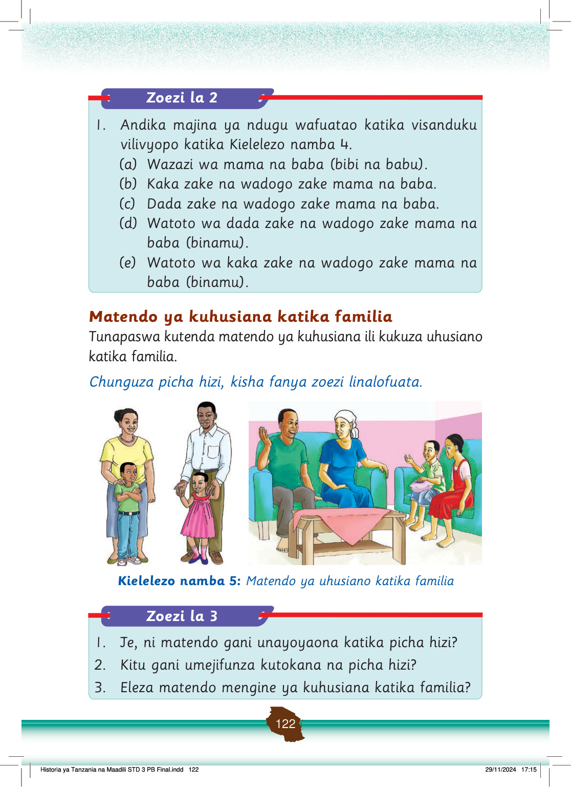

Tunaweza kufanya matendo ya kuhusiana na jamaa wa karibu na familia ili kujenga uhusiano mzuri kati yetu na wao.
Tunaweza kujenga uhusiano na watu wa familia na ndugu wa karibu na familia kwa kuwatembelea mara kwa mara.
Kutembeleana hujenga uhusiano wa karibu na upendo na ndugu wa karibu.
Kutembelea ndugu wa karibu ni vitendo vya maadili ya Kitanzania.
Pia, tunaweza kushirikiana na wanafamilia katika matukio kama vile sherehe na misiba, pale inapotokea kwa ndugu zetu wa karibu.
Vilevile, uhusiano huu unaweza kujengwa kwa kushirikishana mambo mbalimbali ya kuleta maendeleo.
Tangu kale, jamaa wa karibu walishirikiana katika mambo ya kimaendeleo ili kujenga uhusiano wa karibu na familia na jamii.
Uhusiano wa kirafiki
Uhusiano wa kirafiki hujengwa kati ya watu wanaowasiliana au kushirikiana mara kwa mara.
Mawasiliano ya mara kwa mara husababisha watu kufahamiana kitabia, kimwenendo na mitazamo; na hivyo, kujenga urafiki.
Uhusiano ukijengwa husababisha ukaribu baina ya watu wawili au zaidi.
Chunguza Kielelezo namba 6, kisha jibu maswali katika zoezi linalofuata.
Kazi ya Kufanya namba 2
Waulize wazazi au walezi kuhusu matendo ambayo familia yako huyafanya ili kujenga uhusiano mzuri na ndugu wa karibu na familia yenu.